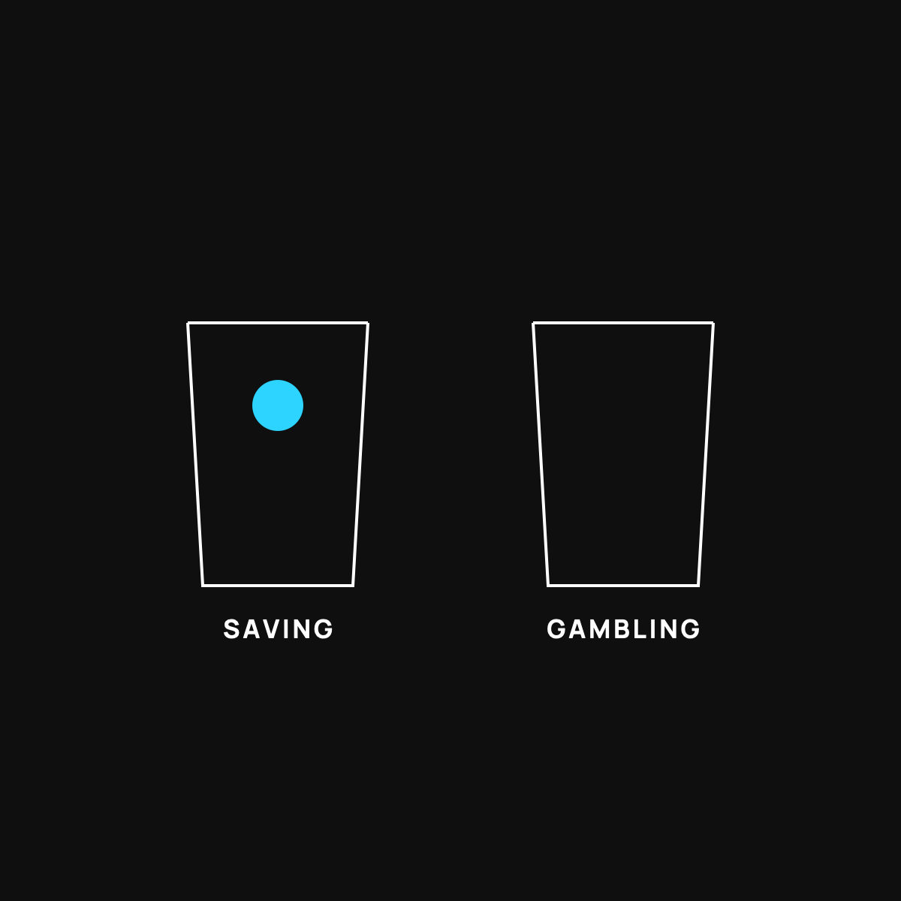

Saving vs. Gambling: Where Bitcoin Actually Fits
Bitcoin isn't automatically either one. How you treat it decides which.
Bitcoin isn't automatically saving or gambling. It becomes one or the other based on how you treat it. Buying a pile hoping to double it by Friday is gambling. Putting away a small amount you won't need for years and ignoring the swings is closer to saving. The one rule: always know which pile the money came from.

Ask ten people about bitcoin and you'll get two answers, shouted. One camp says it's the future of money. The other says it's a casino. Here's the thing they're both missing: how you treat a thing matters more than what the thing is.
A savings account and a slot machine are both "money." You'd never confuse the two, because you treat them completely differently. The question isn't whether bitcoin is good or bad. It's which of those two buckets you're putting it in, and whether you're being honest with yourself about it.
Two very different buckets
Think about the money in your life. Most of it falls into one of two piles.
The savings pile is money you're trying to protect. You add to it slowly, you don't touch it, and you measure it in years. Boring on purpose. The whole point is that it's still there when you need it.
The gambling pile is money you can afford to lose. You put it down hoping for a big, fast payoff, knowing it might vanish. A lottery ticket lives here. So does a hot stock tip from your brother-in-law.
Same dollars. Totally different rules. Trouble starts when you take money from one pile and treat it with the mindset of the other.
The mistake both camps make
The casino crowd looks at bitcoin's wild price swings and says "gambling," full stop. And if you buy a pile today hoping to double your money by Friday, they're right. That is gambling, and you'll probably get hurt.
But the true-believer crowd makes the opposite mistake. They bet the rent money because they're sure it only goes up. That's not saving either. That's gambling wearing a savings costume, and it's the most dangerous version, because it doesn't feel like a bet.
The honest answer sits in the middle, and it's boring, which is usually a good sign.
Where bitcoin can actually fit
For a lot of people, bitcoin makes the most sense treated like a small, long-term savings experiment, not a lottery ticket and not the family nest egg.
That means a small slice of money you genuinely won't need for years. You add to it slowly. You expect the price to lurch up and down and you don't panic when it does. You're not trying to get rich by Friday. You're parking a little bit in something scarce and seeing how it does over a long stretch.
Notice what that is. It's the savings mindset applied to a volatile thing, with the size dialed way down to match the risk. That's the move that keeps you out of both ditches.
The one rule that keeps you safe
Before you buy any, ask yourself one honest question: which pile is this from?
If it's money you'd be genuinely okay losing, and you can leave it alone for years, fine. If it's money you'll need for rent, the car, or your kid's braces, it does not belong here, no matter how confident anyone sounds. Confidence is not a plan.
That single question does more to protect you than any price prediction ever will.
The takeaway
Bitcoin isn't automatically saving and it isn't automatically gambling. It becomes one or the other based on how you treat it and how much you put in. Keep it small, keep it long-term, use only money you can afford to leave alone, and always know which pile it came from. Get that right and the shouting on both sides stops mattering.
Questions I get about this
How much bitcoin should a normal person own?
A small slice. Money you won't need for years, in an amount that wouldn't wreck your month if it went to zero. If the price dropping by half would keep you up at night, you own too much. I go deeper in How Much Is Too Much?.
Is bitcoin a good way to save?
For some people, as a small long-term experiment, yes. The case for it is that it's hard to make more of, so it can't be quietly watered down like the dollar. The case against is the wild price swings. That's why the size has to be dialed down to match the risk.
What money should I never put into bitcoin?
Rent money, car money, your kid's braces money, and anything you'll need in the next few years. If losing it would change your life, it doesn't belong here, no matter how confident anyone sounds. Confidence is not a plan.

Written by David Dewese
Normal guy with a full-time job, wife, and kids. Spent twenty years pursuing music and creative ventures before starting a family. Sharing tips and tricks on how to thrive while living on an artist's income. Not a financial advisor. More about me.
New here?
Normaltown USA is plain-English money and healthcare help for normal people, written by a regular guy with a family of four. No jargon, no hype. Start here, or read the FAQ.